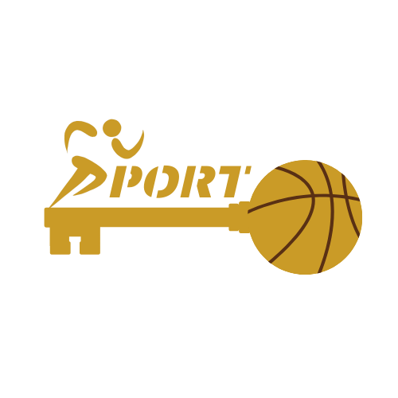
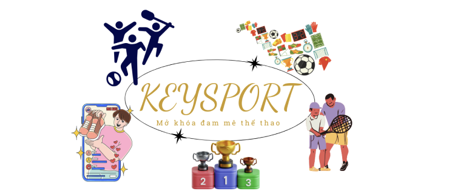

GIỚI THIỆU VỀ KEYSPORT
ĐẶT SÂN THỂ THAO & MUA SẮM DỤNG CỤ CHUYÊN NGHIỆP
1. KEYSport – Giải Pháp Đặt Sân Thể Thao Thông Minh & Nhanh Chóng
- Trong thời đại công nghệ số, việc tìm kiếm và đặt sân thể thao truyền thống thường gặp nhiều khó khăn như thiếu thông tin sân bãi, không biết giờ trống, hoặc phải liên hệ trực tiếp để đặt chỗ. Hiểu được điều đó, KEYSport ra đời với sứ mệnh mang đến giải pháp đặt sân thể thao trực tuyến thông minh, giúp người dùng dễ dàng tìm kiếm và đặt sân chỉ trong vài phút. Với KEYSport, bạn có thể đặt sân bóng đá, cầu lông, tennis, bóng rổ, bóng chuyền, golf và nhiều bộ môn thể thao khác chỉ bằng vài thao tác đơn giản.
🔹 Tại sao nên đặt sân trên KEYSport?
- ✅ Hệ thống tìm kiếm sân nhanh chóng & chính xác.
Người dùng có thể tìm kiếm sân theo nhiều tiêu chí như vị trí, loại sân, giá thuê, tiện ích đi kèm hoặc giờ trống. Chỉ cần nhập thông tin mong muốn, KEYSport sẽ hiển thị danh sách sân phù hợp nhấ - ✅ Lịch đặt sân hiển thị trực quan.
Không còn lo lắng về việc sân đã kín lịch, KEYSport cung cấp bảng lịch đặt sân chi tiết, giúp bạn dễ dàng lựa chọn thời gian phù hợp mà không cần liên hệ trực tiếp với sân - ✅ Hỗ trợ đặt trước theo tuần/tháng.
Bạn có thể đặt lịch định kỳ hàng tuần hoặc hàng tháng để đảm bảo có sân chơi lâu dài mà không lo hết chỗ. - ✅ Thanh toán tiện lợi & linh hoạt.
KEYSport hỗ trợ nhiều phương thức thanh toán, bao gồm:
+ Thanh toán online qua ví điện tử (Momo, ZaloPay, VNPay, v.v.)
+ Chuyển khoản ngân hàng
+ Thanh toán tiền mặt tại sân - ✅ Hệ thống đánh giá & nhận xét minh bạch.
Trước khi đặt sân, bạn có thể tham khảo đánh giá từ những người chơi trước để chọn được sân có chất lượng dịch vụ tốt nhất. - ✅ Dịch vụ hỗ trợ khách hàng 24/7.
Nếu gặp bất kỳ vấn đề nào khi đặt sân, đội ngũ hỗ trợ của KEYSport luôn sẵn sàng giúp đỡ để bạn có trải nghiệm tốt nhất.
2. KEYSport – Cửa Hàng Dụng Cụ Thể Thao Chất Lượng Cao
- Không chỉ giúp bạn dễ dàng đặt sân, KEYSport còn cung cấp các sản phẩm thể thao chính hãng, đáp ứng nhu cầu của người chơi từ nghiệp dư đến chuyên nghiệp.
🔹 Sản phẩm có trên KEYSport:
- 🎯 Dụng cụ thi đấu chuyên nghiệp.
+Bóng đá, bóng rổ, bóng chuyền, bóng bàn, bóng golf, bóng tennis.
+Vợt cầu lông, vợt tennis, bàn bóng bàn.
+Lưới sân cầu lông, lưới tennis, lưới bóng chuyền. - 👟 Giày thể thao chuyên dụng
+Giày đá bóng (sân cỏ nhân tạo, sân cỏ tự nhiên, sân futsal).
+Giày cầu lông, giày tennis, giày chạy bộ, giày tập gym. - 👕 Trang phục thể thao & phụ kiện
+Áo bóng đá, áo cầu lông, áo chạy bộ, quần short thể thao, đồ tập gym.
+Băng cổ tay, băng gối, băng bảo vệ mắt cá chân -
Dây nhảy, dây kháng lực, bóng tập gym, máy tập cơ bụng, tạ đơn.
Găng tay tập gym, đai lưng bảo vệ, dụng cụ massage cơ.
🔹 Vì sao nên mua sắm trên KEYSport?
- ✔️ Sản phẩm chính hãng 100%, đảm bảo chất lượng.
Chúng tôi cam kết cung cấp sản phẩm từ các thương hiệu uy tín như Nike, Adidas, Mizuno, Yonex, Wilson, Puma, Li-Ning,... - ✔️ Giao hàng nhanh chóng trên toàn quốc.
+Giao hàng trong 24-48h tại các thành phố lớn như Hà Nội, TP.HCM, Đà Nẵng.
+Hỗ trợ giao hàng tận nơi với mức phí hợp lý. - ✔️ Chính sách đổi trả linh hoạt
+Đổi hàng trong vòng 7 ngày nếu sản phẩm bị lỗi do nhà sản xuất.
+Hỗ trợ đổi size, đổi mẫu nhanh chóng - ✔️ Chương trình ưu đãi & tích điểm hấp dẫn
+Giảm giá đặc biệt cho khách hàng thân thiết.
+Tích điểm đổi quà hoặc giảm giá khi mua sắm thường xuyên.
3. KEYSport – Cộng Đồng Thể Thao Năng Động
- Ngoài hệ thống đặt sân và mua sắm, KEYSport còn là nơi kết nối cộng đồng thể thao, giúp những người có chung đam mê dễ dàng tìm kiếm đồng đội, tham gia giải đấu hoặc tổ chức các buổi giao lưu.
🔹 Những hoạt động nổi bật tại KEYSport:
- 🔥 Tổ chức giải đấu thể thao định kỳ.
KEYSport phối hợp cùng các sân vận động và CLB tổ chức các giải đấu giao hữu, giải phong trào cho nhiều bộ môn như bóng đá, cầu lông, bóng bàn, tennis. - 📢 Hỗ trợ tìm kiếm đồng đội, ghép đội chơi.
Nếu bạn muốn tìm đồng đội để chơi cùng hoặc tham gia giải đấu nhưng chưa có đội, KEYSport có tính năng "Ghép đội" giúp kết nối những người chơi có cùng đam mê. - 📚 Chia sẻ kiến thức & kinh nghiệm thể thao.
Tại KEYSport, bạn có thể tìm thấy nhiều bài viết hướng dẫn luyện tập, chế độ dinh dưỡng và các mẹo thi đấu từ các HLV chuyên nghiệp.
4. KEYSport – Trải Nghiệm Thể Thao Dễ Dàng & Hoàn Hảo
- Với KEYSport, việc đặt sân và mua sắm dụng cụ thể thao trở nên đơn giản, nhanh chóng hơn bao giờ hết. Dù bạn là người chơi nghiệp dư hay vận động viên chuyên nghiệp, KEYSport đều mang đến những dịch vụ tốt nhất để bạn tận hưởng niềm vui thể thao.
📌Trải nghiệm ngay tại: www.keysport.com
📞Liên hệ hỗ trợ: 1900 XXX XXX | Email: support@keysport.com
📍 Địa chỉ: [Thêm địa chỉ của bạn]
Hãy tham gia cùng KEYSport để tận hưởng thể thao một cách trọn vẹn nhất! 🚀🔥
